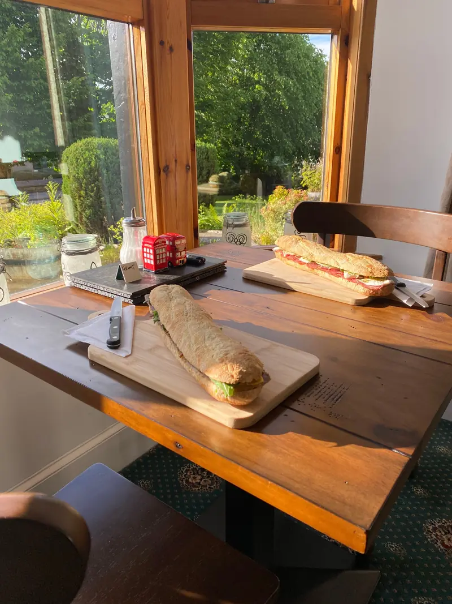
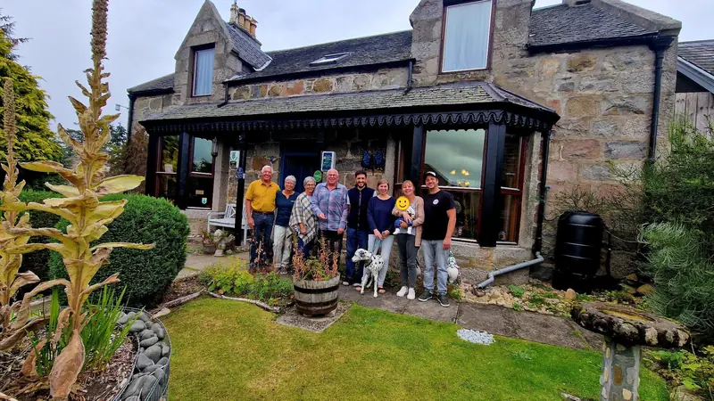
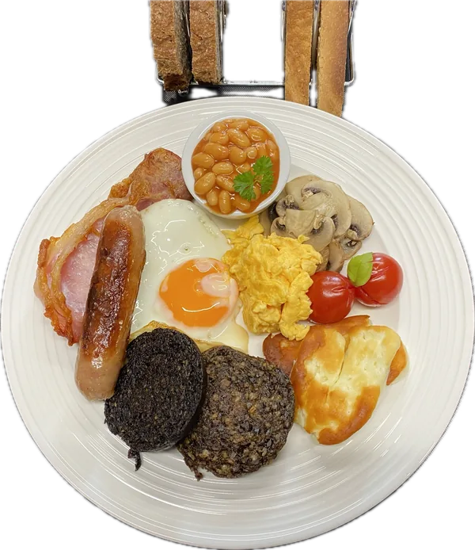
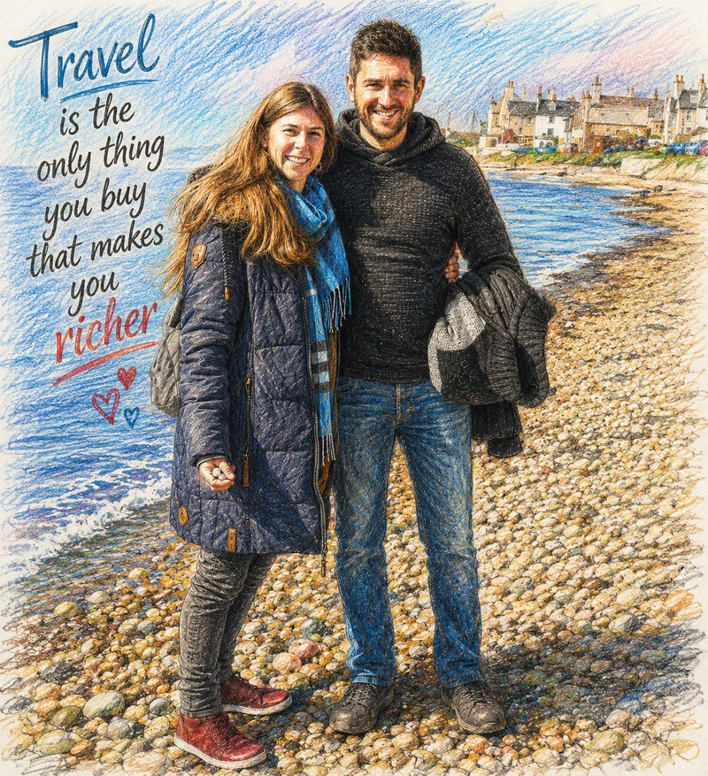

Deluxe
Grant
- Kingsize bed
- Douche van 1,8 m met regendouche en handdouche
- Bovenverdieping

Sarah en Daniel heten u welkom in Garden Park, een gastvrij Guest House in Grantown-on-Spey. Het huis werd in 1868 gebouwd, ligt in zo'n 2000 m² tuin en op slechts drie minuten lopen van de High Street. We bieden een comfortabele bed and breakfast in een ontspannen, huiselijke sfeer en kijken ernaar uit u als onze Gast te verwelkomen.
Over ons
Sarah en Daniel heten u welkom in Grantown-on-Spey, in de prachtige Schotse Highlands, en in het elegante en toch gezellige Garden Park Guest House. Het huis werd in 1868 gebouwd en ligt rustig in zo'n 2000 m² goed verzorgde tuin, dicht bij de golfbaan van Grantown, het wandelpad langs de Spey en de dennenbossen. De High Street met zijn familiewinkels, restaurants en pubs ligt op slechts zo'n drie minuten lopen.
Grantown-on-Spey ligt in het Cairngorms National Park. Het verbindt Strathspey en Badenoch, Speyside, Moray, Nairnshire en de Cairngorms, en is daardoor een van de beste uitvalsbases voor een comfortabel, wat langer verblijf.
Vergunning Home Sharing, nr. HI-70000-R
Kamers
Alle zes kamers hebben een eigen badkamer, zijn elk anders ingericht en worden goed onderhouden. Goede bedden, centrale verwarming en elektrische onderdekens zorgen ervoor dat u goed slaapt. Elke kamer heeft een föhn, een tv en een keuze aan thee en koffie. Eenpersoonsgebruik is in elke kamer mogelijk.
Deluxe

Superior


Tweepersoonskamer · begane grond

Twee aparte bedden · begane grond
De prijzen hangen af van het seizoen, de kamer en de lengte van het verblijf, en onze prijzen voor een langer verblijf zullen u misschien aangenaam verrassen. De actuele prijzen ziet u als u de beschikbaarheid bekijkt.
Ons cottage
Ons vakantiehuisje met eigen keuken op het terrein van Garden Park, voor twee volwassenen plus maximaal twee kinderen tot 10 jaar, of één kind tot 12 jaar. Het ligt gelijkvloers aan de straat, heeft een inloopdouche, en onder het verhoogde tweepersoonsbed is veel ruimte voor bagage. Butterfly Cottage is ook de enige plek waar we uw hond kunnen verwelkomen.
Vergunning Secondary Letting HI-70001-R
Vraag ons naar de prijzen voor een langer verblijf, aanbiedingen buiten het seizoen en groepsprijzen. Voor familiefeesten, bruiloften en andere groepsevenementen kunt u ook het hele huis voor uzelf hebben. Neem gerust contact op en we helpen u graag met het plannen van uw evenement in de Highlands.
Ontbijt
Wij richten ons op de twee dingen die het meest tellen, een goed bed en een echt ontbijt.
Elke ochtend kiest u op onze ontbijtkaart precies wat u wilt. We bereiden elk ontbijt op bestelling, alleen voor u, zo voorkomen we voedselverspilling. Onze champignons en tomaten gaan 90 minuten van tevoren de oven in, zodat ze klaar zijn voor uw vers bereide ontbijt.


Tijdens uw verblijf
Na een lange autorit wil niemand nog de deur uit. Daarom kunt u onze Wee Fancy Brügel vooraf bestellen. Een echte rustieke Zwitserse comfortmaaltijd op een knapperig, op steen gebakken zuurdesemstokbrood, in vier varianten. Geen gewone snack, maar een volwaardige maaltijd voor echte honger.
Maandag tot zaterdag, minstens 24 uur voor aankomst vooraf bestellen, alleen voor Gasten van Garden Park en Butterfly Cottage. Alle details vindt u in de pdf die we met uw boekingsbevestiging meesturen.
Zin in koffie na een dag op pad? Voor onze Gasten maken we Iced Coffee, Cappuccino, Latte Macchiato en Espresso.
En wie een stukje Garden Park mee naar huis wil nemen, vindt bij ons ook een paar kleine souvenirs van Sarah en Daniel, van Highland-honing tot kapstokhaken gemaakt van oude whiskyvaten.



Aanbiedingen & nieuws

Drie generaties. Eén onvergetelijke vakantie in Schotland.
Breng de hele familie samen voor een paar bijzondere dagen in de Schotse Highlands. Boek drie kamers voor vier nachten, en de derde kamer voor de kinderen (6 tot 11 jaar) is helemaal gratis.
Met aparte kamers heeft iedereen zijn eigen plek. En als papa en mama wat meer privacy willen, kunnen ze zelfs Butterfly Cottage tot hun eigen toevluchtsoord maken. Terwijl de grootouders mooie herinneringen maken met de kleinkinderen, genieten papa en mama van wat welverdiende tijd samen.
Iets meer ruimte, iets meer tijd samen en herinneringen voor het leven.
Minimaal drie kamers en vier nachten. Zolang er plaats is. Alleen met reservering vooraf. Stuur ons een e-mail om uw Generation Getaway te regelen.
Mail ons26 – 30 december 2026
De dagen tussen Kerstmis en Hogmanay. Het perfecte moment om te vertragen.
3 nachten blijven en er maar 2 betalen, of 4 nachten voor de prijs van 3, in onze kamers MacDonald (Superior) of Grant (Deluxe).
Tussen Kerstmis en Hogmanay weet toch niemand precies welke dag het is. Dus waarom niet ontsnappen naar de Schotse Highlands en gewoon een paar dagen genieten, zonder ergens te hoeven zijn?
Lange wandelingen door de Anagach Woods, daarna terug naar de warme zitkamer, wegkruipen met een goed boek of rustig een bordspel bij het vuur. De ochtend begint met een echt ontbijt, en de to-dolijst blijft gewoon thuis.
Geen plannen. Geen haast. Gewoon een klein winteruitje in de Highlands.
Aanbieding geldig voor verblijven van 26 tot 30 december 2026. Zolang er plaats is.
Beschikbaarheid Twixmas26 december 2026 – 4 januari 2027
Donderdag feesten. Vrijdag rustig aan. Genieten van het weekend.
Waarom na Hogmanay meteen naar huis haasten? Vier het met ons in Grantown-on-Spey en begroet het nieuwe jaar in echte Highland-stijl. Hogmanay valt dit jaar op een donderdag, het perfecte excuus om van het feest een lang weekend te maken.
Grantown viert het meestal met een traditioneel straatfeest op The Square, op een paar stappen van onze voordeur. Geen taxi, geen rijen, maar een paar minuten lopen terug naar een warm en comfortabel bed.
En het mooiste? Op vrijdagochtend hoeft u niet meteen weg. Geniet van een rustig ontbijt, ontdek de Highlands in de winter en haal alles uit het lange weekend.
Hogmanay vieren. Uitslapen. Iets langer blijven.
We zijn open van 26 december 2026 tot 4 januari 2027.
Beschikbaarheid HogmanayDe omgeving
Grantown werd in de 18e eeuw gesticht, is de historische hoofdstad van Strathspey en een bijna perfecte uitvalsbasis in de Highlands voor dagtochten, whisky, natuur en kust. Sinds 2003 hoort het stadje bij het Cairngorms National Park, het grootste nationale park van het Verenigd Koninkrijk.
 Onze interactieve kaart
De 50+ favoriete ideeën voor dagtochten van Sarah en Daniel in en rond Grantown-on-Spey.
Open de kaart
Kaartgegevens © OpenStreetMap-bijdragers
Onze interactieve kaart
De 50+ favoriete ideeën voor dagtochten van Sarah en Daniel in en rond Grantown-on-Spey.
Open de kaart
Kaartgegevens © OpenStreetMap-bijdragers
De Anagach Woods en de Speyside Way beginnen op een paar minuten van de deur, en we zijn het Guest House dat het dichtst bij de route ligt. Edelherten, otters, dolfijnen, steenarenden, visarenden en boommarters leven in de regio, en het RSPB-centrum bij Loch Garten ligt op korte rijafstand.
Negen distilleerderijen en een werkende kuiperij aan de Malt Whisky Trail, waaronder The Cairn, de eigen distilleerderij van Grantown. Meer informatie vindt u op maltwhiskytrail.com.
Acht golfbanen dichtbij, in Grantown, Carrbridge, Boat of Garten, Abernethy, Newtonmore, Kingussie, Aviemore en Craggan. Voor clubs en schoenen hebben we een afsluitbare berging en een droogruimte. Golftips op onze kaart.
Ballindalloch Castle, Cawdor Castle en het slagveld van Culloden liggen allemaal binnen een uur. Het Grantown Museum is om de hoek.
Lunch en diner serveren we niet, maar bij elke boeking krijgt u een pdf met alle restaurants en cafés in de buurt. Of u nu veganistisch eet of van vlees en vis houdt, Grantown heeft veel keuze, en we delen graag onze persoonlijke favorieten.
Vissen en jagen met een lokale gids kunnen we tijdens uw verblijf regelen. Paardrijden, ponytrekking, vogels kijken, skiën, snowboarden en wildwaterraften kan allemaal in de buurt. Vistips op onze kaart.
Onze interactieve kaart toont meer dan 50 zorgvuldig gekozen bestemmingen en kant-en-klare ideeën voor dagtochten, in 8 categorieën op 4 overzichtelijke kaarten.
Ontdek de interactieve kaart van Strathspey & Badenoch, Speyside, de Cairngorms en de kust van Moray.
Interactieve kaart openenDuurzaamheid
Grantown-on-Spey is gemaakt om wat langer te blijven. Vanaf hier gaan dagtochten als de punten van een ster alle kanten op, naar Speyside en zijn distilleerderijen, Aviemore en de Cairngorm-bergen, Tomintoul, Elgin, Nairn en de kust van Moray, en Inverness, allemaal binnen een uur. U pakt één keer uit en besteedt uw dagen aan ontdekken in plaats van inpakken en rijden.
We werken nauw samen met Green Tourism en hebben hun Gold-keurmerk. Sinds het seizoen 2024 leveren zonnepanelen aan de zuid- en zuidoostkant van het huis stroom voor Garden Park, en we hebben alle watertanks vervangen. Rijdt u elektrisch, dan kunt u uw auto opladen bij onze laadpaal met de app Tap Electric. We hebben ook een eigen kruidentuin en een bijvriendelijke bloementuin, kopen lokaal waar het kan, houden verpakking en afval beperkt en maken waar mogelijk schoon met stoom.
Elke extra nacht betekent een keer minder beddengoed en handdoeken wassen. Dat bespaart water, energie en wasmiddel, en u heeft meer tijd om Grantown-on-Spey en de Cairngorms te leren kennen in plaats van er doorheen te haasten.

Goed om te weten
Geen verrassingen, geen kleine lettertjes verstopt in een pdf. Wilt u iets bespreken, bel of schrijf ons gerust.
We zijn open van maart tot oktober, en van 26 december tot 4 januari rond Kerst en Oud en Nieuw. Verder is het huis van november tot februari gesloten, omdat ons oude granieten huis lang nodig heeft om warm te worden.
Op verzoek openen we het huis in de winter voor groepen van minstens zes personen die minimaal drie nachten blijven.
Boekingen worden bevestigd met een aanbetaling voor de eerste nacht per kamer. We accepteren contant geld (GBP), Mastercard en Visa, overschrijving en Stripe-betaallinks. Contactloos betalen is ook mogelijk.
Inchecken kan tussen 16 en 19 uur, uitchecken tot 10 uur. Elke dag kiest u uw ontbijt en het tijdstip op onze ontbijtkaart.
Als u 14 of meer dagen voor aankomst annuleert, zijn de annuleringskosten £14 per kamer.
Als u tussen 3 en 13 dagen voor aankomst annuleert, zijn de annuleringskosten £50 per kamer.
Als u minder dan 3 dagen voor aankomst annuleert, zijn de annuleringskosten 75% van het totale boekingsbedrag.
Als u niet komt of uw boeking na de aankomstdatum inkort, wordt het volledige boekingsbedrag in rekening gebracht.
Bij boekingen meer dan 4 dagen voor aankomst is een aanbetaling voor de eerste nacht verschuldigd en het restant 9 dagen voor aankomst. Bij boekingen boven £1,000 is de aanbetaling 40%. Boekingen 4 dagen of minder voor aankomst worden volledig betaald en niet terugbetaald. We raden een reisverzekering sterk aan.
Het huis ligt iets verhoogd, ongeveer 30 meter van de weg. U bereikt de ingang via een licht oplopend voetpad of via 12 lage treden. Het huis is niet toegankelijk voor rolstoelen.
Gasten met een rollator of loophulp kunnen de begane grond bereiken, en we raden de kamer Sutherland aan, met inloopdouche. De kamer Mathieson ligt ook op de begane grond, maar de douche heeft een opstapje van 15 cm.
Reist u met uw hond? In Butterfly Cottage is hij van harte welkom, daar heeft de hele familie ruimte om zich thuis te voelen. De toeslag is £39 per boeking, per week.
Droogruimte en afsluitbare berging ter plaatse, en we zijn het Guest House dat het dichtst bij de Speyside Way ligt. Bagagevervoer naar uw volgende accommodatie kunnen we regelen, vraag het ons gewoon voor uw aankomst. Groepen tot 14 personen zijn welkom in overleg.
Kinderen vanaf 8 jaar zijn welkom in Garden Park. Voor kinderen van 8 tot 15 jaar gelden verlaagde tarieven.
Elke kamer heeft gratis thee en koffie, verzorgingsproducten in de badkamer, een tv en een föhn. U bent van harte welkom in onze zitkamer voor Gasten, waar u bordspellen, boeken en informatie over de omgeving vindt. Op koudere dagen houdt de houtkachel de kamer warm en gezellig.
Galerij






Wie zijn wij
Sarah en Daniel kijken ernaar uit u in Garden Park te verwelkomen. We helpen u graag met ideeën uit de buurt, praktische reistips en onze persoonlijke favorieten, zodat u het meeste uit uw verblijf in de Highlands haalt.

En Lucy? Onze dalmatiër woont bij ons in ons privégedeelte van het huis en komt maar heel zelden in het Guest House. Wilt u haar leren kennen, vraag het gewoon, dan komt ze graag even hallo zeggen.
We spreken Engels, Duits, Zwitserduits en Italiaans.
Beoordelingen van Gasten
5/ 5
Uit meer dan 240 geverifieerde beoordelingen · lees ze allemaal
“Spotlessly clean, peaceful location just a very short walk to facilities. Host very welcoming and helpful.”
“The breakfast was first-class, the hosts were welcoming and friendly.”
„Würden euch jeder Zeit weiter empfehlen. Es waren schöne Tage, die wir sehr genossen haben.“
„Wir vermissen euer Frühstück mit der tollen Auswahl und dem selbstgebackenen Brot. Und eure Herzlichkeit …“
 Traveller Review Award 2026Booking.com, 10 uit 10.
Traveller Review Award 2026Booking.com, 10 uit 10.
Wie direct boekt, betaalt geen commissie aan een platform en heeft rechtstreeks contact met ons.
BeschikbaarheidFAQ
Grantown ligt in het centrum van meerdere regio's. Gasten kunnen gemakkelijk stervormige dagtochten maken naar Speyside, de Cairngorms, de Moray-kust, het gebied rond Inverness, Strathspey en Aberdeenshire. Veel hoogtepunten zijn bereikbaar binnen 20-50 minuten. Elke dag kan compleet ander landschap en andere belevenissen bieden. Zin in wat ideeën voor uw planning? De interactieve kaart van Sarah en Daniel kan daarbij goed helpen.
Ja. Garden Park ligt in een rustige zijstraat. Het centrum is ongeveer 3 minuten lopen. Alle restaurants zijn binnen 1-10 minuten te voet bereikbaar. Verschillende liggen op minder dan 4 minuten.
Ongeveer 50 minuten met de auto, via Nairn of via de A9. Er is ook openbaar vervoer, regelmatige bussen verbinden Grantown-on-Spey en Inverness.
Ja. Verse vegetarische en veganistische opties zijn elke dag beschikbaar.
Natuurlijk kun je de Speyside Malt Whisky Trail in één dag doen. De echte vraag is of u het de volgende dag nog weet. 😄 Met zoveel distilleerderijen, bezoekerscentra en proeverijen vliegt de tijd. Ons advies is om minder distilleerderijen te bezoeken en er meer van te genieten. U vindt ze allemaal op onze kaart Speyside Distilleries. Daniel biedt op aanvraag ook een chauffeursdienst voor maximaal 4 personen. Omdat de data snel volraken, vooral in het hoogseizoen, is boeken minstens 6 weken van tevoren aan te raden.
Ja, echt, en ze hebben nog nooit entree gevraagd! De beste plek is Chanonry Point bij Fortrose, waar tuimelaars regelmatig worden gezien, vooral 1,5-2 uur na laag water. Neem een verrekijker mee en heb geduld, de beloning is het waard.
Om frauduleuze sites van derden of onnodige verwerkingskosten te vermijden, kunt u het beste alleen via officiële kanalen van de Britse overheid aanvragen. Dat kan online rechtstreeks op de officiële website gov.uk/eta/apply, of via de officiële 'UK ETA'-app (App Store en Google Play), waarmee u eenvoudig de biometrische chip van uw paspoort en uw gezicht scant. Let op, de officiële UK ETA-aanvraag kost £20. Controleer altijd of het webadres exact eindigt op .gov.uk, want onafhankelijke websites lijken vaak identiek aan officiële pagina's maar rekenen hoge verborgen kosten.
Wie zal het zeggen? Dat was niet erg grappig, hè? 😉 De waarheid is dat niemand die vraag kan beantwoorden. Schotland heeft meer dan 140 distilleerderijen en iedereen heeft een andere smaak. Misschien houdt u van een rokerige eilandwhisky, of bent u helemaal nieuw in whisky. In dat geval is Speyside een van de beste plekken om te beginnen. Waarom niet bij ons logeren en meer dan 50 distilleerderijen in Speyside en Strathspey ontdekken? Een prachtig avontuur voor whiskyliefhebbers en toekomstige liefhebbers. En als gin meer uw ding is, dan heeft u geluk, want in de Cairngorms en de omgeving worden ook enkele uitstekende gins gemaakt.
Ja, de regio maakt uitstekende, internationaal bekroonde gin. Kinrara won bijvoorbeeld “World's Best Signature Botanical” op de World Gin Awards 2025 met de Caper Artist Edition. Of Glenrinnes, met een moderne distilleerderij en een 100% biologisch certificaat. En trouwens, ook in 2026 pakt Kinrara flink uit, met de titel “World's Best Gin Design” op de World Drinks Awards in Londen.
Meer vragen en antwoorden in onze interactieve kaart.
Contact
+44 1479 873235
relax@garden-park.co.uk
what3words include.milky.baths
Inverness en de kust van Moray liggen op ongeveer 50 minuten rijden. Of u nu met de auto, de veerboot of de trein komt, of zonder auto reist met bus en taxi, alles vindt u op onze interactieve kaart.
Naar Grantown-on-Spey